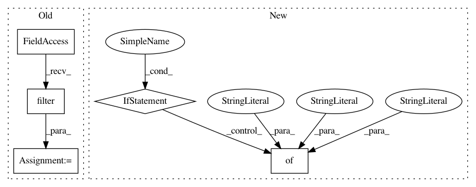

bf4d4be450616eeb0252b276c9febc4a50e83ace,api/data_refinery_api/views/dataset.py,,validate_dataset,#Any#,35
Before Change
except Exception as e:
raise serializers.ValidationError("Experiment " + key + " does not exist")
samples = experiment.sample_set.filter(
// We only want samples with a quant.sf file associated with them
results__computedfile__filename="quant.sf",
results__computedfile__s3_key__isnull=False,
results__computedfile__s3_bucket__isnull=False,
)
if samples.count() == 0:
raise serializers.ValidationError(
"Experiment "
+ key
After Change
else:
accessions.extend(value)
if len(non_downloadable_experiments) != 0:
raise serializers.ValidationError(
{
"message": "Experiment(s) in dataset have zero downloadable samples. See `non_downloadable_experiments` for a full list",
"non_downloadable_experiments": non_downloadable_experiments,
}
)
if len(accessions) == 0:
return
if data.get("quant_sf_only", False):
samples_without_quant_sf = Sample.public_objects.filter(
accession_code__in=accessions
).exclude(
// Exclude samples that have at least one uploaded quant.sf file associated with them
results__computedfile__filename="quant.sf",
results__computedfile__s3_key__isnull=False,
results__computedfile__s3_bucket__isnull=False,
)
if samples_without_quant_sf.count() > 0:
raise serializers.ValidationError(
{
"message": "Sample(s) in dataset are missing quant.sf files. See `non_downloadable_samples` for a full list",
"non_downloadable_samples": [
s.accession_code for s in samples_without_quant_sf
],
},
)
else:
In pattern: SUPERPATTERN
Frequency: 3
Non-data size: 5
Instances
Project Name: AlexsLemonade/refinebio
Commit Name: bf4d4be450616eeb0252b276c9febc4a50e83ace
Time: 2020-07-06
Author: willvauclain.dev@gmail.com
File Name: api/data_refinery_api/views/dataset.py
Class Name:
Method Name: validate_dataset
Project Name: samuelclay/NewsBlur
Commit Name: dac88c0a25340a25e247fcb27f093c86ec67b88c
Time: 2012-12-12
Author: samuel@ofbrooklyn.com
File Name: apps/social/views.py
Class Name:
Method Name: story_public_comments
Project Name: AlexsLemonade/refinebio
Commit Name: f1aba98889fe38cdb66219911436a7cb0a22aa84
Time: 2020-07-27
Author: willvauclain.dev@gmail.com
File Name: api/data_refinery_api/views/dataset.py
Class Name:
Method Name: validate_dataset